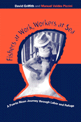

<body bgcolor="#FFFFFF" text="#000000" link="#0000FF" vlink="#CC0000" alink="#CC0000"><center><hr width="350" size="1" align="center" noshade>The human dimension of globalized labor<hr width="350" size="1" align="center" noshade><p><a href="https://cdcshoppingcart.uchicago.edu/Cart/ChicagoBook.aspx?ISBN=9781566399104&&PRESS=temple" target="_top">Buy this book!</a> | <a href="https://cdcshoppingcart.uchicago.edu/Cart/Cart.aspx?PRESS=temple" target="_top">View Cart</a> | <a href="https://cdcshoppingcart.uchicago.edu/Cart/Cart.aspx?PRESS=temple" target="_top">Check Out</a></p><p></p></center><!--none//--><h1>Fishers at Work, Workers at Sea</h1>
<H2>A Puerto Rican Journey through Labor and Refuge</H2>
<h3>David Griffith and Manuel Valdés Pizzini</h3>
<P>cloth 1-56639-910-6 $75.50, Jan 02, <FONT COLOR=#990033>Available</FONT>
<br>paper 1-56639-911-4 $29.95, Jan 02, <FONT COLOR=#990033>Available</FONT>
<br>Electronic Book 1-43990-763-3 $29.95 <FONT COLOR=#990033>Available</FONT>
<BR> 280 pp
6x9
2&nbsp;tables 1&nbsp;map(s) 2&nbsp;figures 19&nbsp;halftones
</P><BLOCKQUOTE><I>"</I>Fishers at Work, Workers at Sea<I> makes a major contribution to the literature on the anthropology and sociology of fisheries by providing an intelligent analysis of Puerto Rican fishermen which extends beyond a description of their fishing techniques and strategies and, more recently, the implications for public policy. The authors present a wealth of rich and thick data in an organized and coherent fashion...and focus upon the detailed complexities of what these fishermen bring to the increasing conflict between labor and the forces of capital."</I>
<br>&#151<b>Robert Lee Maril</b>, Chair and Professor, Department of Sociology, University of Texas Pan American, and author of <I>Waltzing with the Ghost of Tom Joad</I><I></I></BLOCKQUOTE>
<p>Small-scale fishing, a house-hold based enterprise in Puerto Rico, rarely provides sufficient income for a family, but it anchors their culture and sense of themselves within that culture. Even when family members must engage in wage work to supplement house-hold income, they think of themselves as fishers. Liche typifies these wage workers: <I>"When he was quite young, he left the island to struggle in other lands, to work, to raise a family, to send home the money he earned. Ten, twenty, thirty years passed...during which he did not once fish or even see the ocean. But in a boat-building factory in New Jersey, in a bakery in the Bronx, on the production line of a chemical factory, on dozens of construction sites, every single day he made a mental review of the waters, the isles and cays ...and entertained no thought that was not related to his return." </I>
<p><I>Fishers at Work, Workers at Sea</I> describes Puerto Rican fishing families as they negotiate homeland and diaspora. It considers how wage work affects their livelihoods and identities at home and how these independent producers move in and out of global commodity markets. Drawing on some 100 life histories and years of fieldwork, David Griffith and Manuel Valdés Pizzini have developed a complex, often moving portrait of the men and women who fiercely struggle to hang onto the coastal landscapes and cultural heritage tied to the Caribbean Sea.
<BR>&nbsp;<h2>Excerpt</h2><P>Excerpt available at <a href="http://www.temple.edu/tempress">www.temple.edu/tempress</a></p>
<BR>&nbsp;<h2>Reviews</h2>
<p><I>"The stunning accomplishment of this book is the way in which the authors have theoretically and ethnographically related deep cultural meanings not only to ecological contexts but to the stuff of political economy&#151the material social relationships entailed in class formation, the commodity form, and globalizing capitalism generally. Griffith and Valdés Pizzini focus on the praxis of Puerto Rican fishers and their families through a sophisticated theoretical framework that is as illuminating as it is powerful. These are the kinds of heights to which anthropology should strive. This book gives me hope for the discipline's future."</I>
<br>&#151<b>Kevin A. Yelvington</b>, University of South Florida, and author of <I><a href="896_reg.html" target="_top">Producing Power: Ethnicity, Gender, and Class in a Caribbean Workplace</a></I> (Temple)
<p><I>"This book masterfully shows how combinations of wage labor and informal independent production are still at the heart of global capitalism and the reproduction of proletariat households. Offering some of the best anthropology of labor around, the authors examine the multiple and contradictory meanings of small-scale commercial fishing in Puerto Rico: subsidy to capital, space for rest and therapy, source of pride, identity and livelihood for workers."</I>
<br>&#151<b>Rubén Hernández-León</b>, University of California, Los Angeles
<p><i>"...this book amply displays the strength of good ethnography, unencumbered by autobiography, and enhanced by clear distinctions between the documented and the supposed."</i>
<br>&#151<b>Sydney Mintz</b>, <i>The Caribbean Studies Newsletter</i>
<p><i>"[C]omes across as a deeply sympathetic and persuasive study of Puerto Rican fishers who walk the tightrope between wage labor and domestic production in fishing....without a doubt, the book deserves a wide, interdisciplinary audience beyond anthropology, for it is a useful addition to understanding human action in the dialectic of the individual and the collective."</i>
<br>&#151<b><i>Anthropology of Work Review</i></b>
<p><i>"[T]he book has much to offer those interested in the Caribbean and in fishers... [this is] a work that increases our understanding of coastal fishing, so important in the Caribbean, and of the changing situations and choices in people's lives that makes the category of 'fisher' such a deceptive one."</i>
<br>&#151<b><i>Social Anthropology</i></b>
<p>Read a <a href="../authors/1563_review.pdf">review</a> from <I>Work and Occupations</I>, February 2003, written by Bonnie A. McCay (pdf).
<p><i>"</i>Fishers at Work, Workers at Sea<i> is one of the best books on the anthropology of work in the literature. The authors have made a major contribution to our understanding of the way in [which] people in one society combine household production and wage laboring jobs, while dealing with the global capitalist system and the need to maintain their traditional ways of life."</i>
<br>&#151;<b><i>Human Ecology</i></b>
<BR>&nbsp;<h2>Contents</h2><P>
<p>Preface
<br>1. Divided Selves: Domestic Production and Wage Labor in Puerto Rico and Anthropology
<br>2. Palatable Coercion: Fishing in Puerto Rican History
<br>3. Puerto Rican Fisheries
<br>4. <I>Chiripas</I>: Working-class Opportunity and Semiproletarianization
<br>5. Injury and Therapy
<br>6. Roads Less Traveled: Proletarianization and Its Discontents
<br>7. Power Games: Work Versus Leisure Along Puerto Rico's Coast
<br>8. Fragments of a Refuge
<br>References
<br>Index
<br>Photographs
</P><BR>&nbsp;<H2>About the Author(s)</H2>
<table><tr><td valign="top"><img src="/tempress/authors/1563_au1.gif" height="90" width="75"></td><td width="100%" valign="middle"><p><b>David Griffith</b> is Professor of Anthropology and Senior Scientist at East Carolina University. He is the author of <I><a href="1141_reg.html" target="_top">Working Poor: Farmworkers in the United States</a></i> (Temple) and <I>The Estuary's Gift: An Atlantic Coast Cultural Biography</I>.</P></td></tr></table><table><tr><td valign="top"><img src="/tempress/authors/1563_au2.gif" height="90" width="75"></td><td width="100%" valign="middle"><p><b>Manuel Valdés Pizzini</b> is Professor of Anthropology and Sociology, Researcher at the Center of Applied Social Research, and Director of the University of Puerto Rico Sea Grant College Program at the University of Puerto Rico in Mayaguez.</P></td></tr></table>
<BR><H2>Subject Categories</H2>
<p><A HREF="/tempress/anthropology.html" TARGET="_top">Anthropology</a>
<BR><A HREF="/tempress/latin.html" TARGET="_top">Latin American/Caribbean Studies</a>
<BR><A HREF="/tempress/labor.html" TARGET="_top">Labor Studies and Work</a>
</p>
<p align="center"><a href="https://cdcshoppingcart.uchicago.edu/Cart/ChicagoBook.aspx?ISBN=9781566399104&&PRESS=temple" target="_top">Buy this book!</a> | <a href="https://cdcshoppingcart.uchicago.edu/Cart/Cart.aspx?PRESS=temple" target="_top">View Cart</a> | <a href="https://cdcshoppingcart.uchicago.edu/Cart/Cart.aspx?PRESS=temple" target="_top">Check Out</a></p><p><font face="Arial" size="1"><a href="copyright.html" onMouseOver="window.status='Web Copyright Policy';return true;" onMouseOut="window.status=''" title="Web Copyright Policy">&copy;</a> 2015 <a href="http://www.temple.edu" target="new" onMouseOver="window.status='Link to Temple University home page';return true;" onMouseOut="window.status=''" title="Link to Temple University home page">Temple University</a>. All Rights Reserved. http://www.temple.edu/tempress/titles/1563_reg.html</font></p>